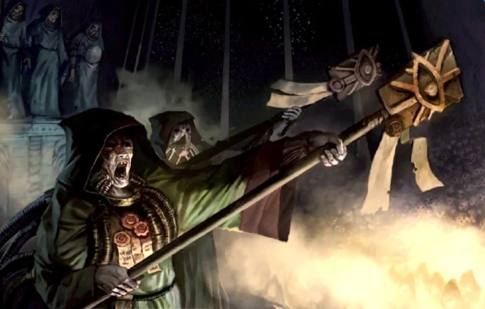

Astronomican
| Astronomican | |
|---|---|
 Rite of the Choir Astronomica, from a manuscript of the Adeptus Astronomica | |
| Type | Psychic beacon |
| Source | The Emperor of Mankind, amplified by the Golden Throne |
| Location | Imperial Palace, Terra |
| Range | About fifty thousand light-years |
| Used by | Navigators and the Imperial Navy |
| Maintained by | Adeptus Astronomica, with the Choir Astronomica |
| Obstruction | The Great Rift (999.M41 onward) |
The Astronomican is a psychic beacon of immense power that shines from Terra through the Warp across much of the galaxy. It is the means by which the Imperium's ships navigate the Immaterium, and it has been a foundation of Imperial travel since the Great Crusade. According to Imperial doctrine, it is produced by the will of the Emperor of Mankind, who is sustained on the Golden Throne for that purpose.[1]
The Astronomican is invisible to the ordinary eye. To Navigators, the mutated humans whose third eye can look into the Warp, it is a light of great clarity, a fixed point by which a ship's course can be plotted through the changing currents of the Immaterium. Without it, warp travel across great distances is unreliable at best and fatal at worst, and any ship that cannot find its light is at the mercy of the Warp's storms and of the daemons that inhabit it.[1]
Origins
[edit]The Emperor created the Astronomican during the Great Crusade, to give the Imperium a way of navigating the Warp that did not depend on the unreliable beacons of earlier ages. Imperial scholars attribute its design to the Emperor and to the Mechanicum, working together in the vaults beneath the Palace. It was the first of the Emperor's great works to bear fruit, and it allowed the Legions to range across the galaxy in a manner no earlier human power had managed.[2]
After the Heresy the Astronomican continued to shine. Its power was thought to be derived from the Emperor's mind and psychic strength, and the Throne's purpose, in the Imperial Cult's teaching, is to preserve both. The Mechanicus agrees that the Astronomican and the Throne are linked, though it gives no opinion on the means. The matter is of sufficient importance that the High Lords have, on several occasions, forbidden any investigation of the Throne's role in sustaining it.[3]
Operation
[edit]The Emperor's will
[edit]The Astronomican is generated, according to the Imperial Cult, by the Emperor's will. The beacon is projected by the Emperor's mind through the Throne, and amplified by the Choir Astronomica, a body of psykers who serve in the Hall of the Astronomican on Terra. Each day, the Throne draws on the souls of sacrificed psykers to provide the energy that the Emperor's failing body can no longer produce. The Astronomican, in the Imperial Cult's view, is a continuous act of sacrifice.[3]

The Choir Astronomica
[edit]The Choir is a body of astropaths, trained and bound to the Emperor, who serve the Astronomican by lending their gifts to its projection. Their precise role is not well understood. The Adeptus Astronomica, which administers the Choir, says only that it assists in focusing the Emperor's light and in adjusting it to the changing state of the Warp.[1]
Navigators and the fleets
[edit]Imperial ships carry Navigators, members of the Navigator Houses who have the Warp-sight, who use the Astronomican to plot their route. The Astronomican guides them through the Warp as a lighthouse guides a ship through a fog, and it allows fleets to cross great distances in a predictable time. Its range, however, is not unlimited, and the Navigators must rely on other means once they pass beyond the beacon's reach. Imperial astrographers estimate the range at about fifty thousand light-years.[1]
Effects on the Imperium
[edit]The Astronomican is the main reason the Imperium can exist. It allows Terra to maintain contact with distant worlds, it allows the Imperial Navy to concentrate fleets, and it allows the tithe ships to reach the capital. The whole structure of Imperial government, from the planetary governor to the High Lords, depends on a communication that the Astronomican makes possible. Its failure would break the Imperium into isolated fragments.[2]
Its religious significance is correspondingly great. Pilgrims call it the Light of the Emperor, and the Imperial Cult teaches that the souls of the faithful dead are drawn toward it. Navigators describe seeing it as the one fixed certainty of their craft.[3]
The Great Rift
[edit]At the end of the 41st millennium the destruction of Cadia and the opening of the Great Rift cut the galaxy in two. The Astronomican's light cannot be seen across the Rift, and the worlds of the Imperium Nihilus have been left without it. The Imperium Sanctus, on Terra's side of the Rift, still receives it, but the Navigators report that it grows dimmer and harder to follow. The Adeptus Astronomica has increased the number of psykers sacrificed to it, and the Lord Commander has ordered that the problem be treated as the Imperium's first priority.[4]
The Astronomican's weakening is also a matter of concern to the Mechanicus, which fears that the Throne will not outlast the strain. In the early 42nd millennium the Necrons of the Pariah Nexus, whose machinery suppressed psychic abilities across large parts of the galaxy, posed a further danger to the Choir and to the Navigators who depend on it. Imperial armies were sent to destroy the Nexus.[4]
Doctrine and dissent
[edit]The question of what the Astronomican truly is has generated some of the sharpest disputes in Imperial scholarship. The Ecclesiarchy teaches that it is the visible form of the Emperor's divinity. The Mechanicus regards it as an engineering marvel produced by a mind far beyond any adept's reach. The Navis Nobilite, whose Houses depend on it more than any other institution, hold their own counsel and say that the light is real, that it is dimming, and that nothing else need be said. The Inquisition has recorded cases of fleets lost in the Warp when the Astronomican failed to find them; the records are sealed and are the property of the Ordo Hereticus.[3]
The Imperium's reliance on the beacon is also its greatest weakness. The destruction or silencing of the Astronomican has been the stated aim of several of the Imperium's enemies, the servants of Chaos among them, and its protection is the real reason for the density of the Palace's defences. For the same reason the Astronomican's safety has become a standing priority of the Office of the Lord Commander.[4]
Timeline
[edit]| Date | Event |
|---|---|
| c. 798.M30[a] | At the start of the Great Crusade, the Emperor creates the Astronomican so that fleets can navigate the Warp without the unreliable beacons of earlier ages. |
| 014.M31 | The Emperor is enthroned on the Golden Throne after the Siege of Terra, and the Astronomican is sustained by the Throne from then on. |
| M37 | The Liber Ecclesiasticus teaches that the light is the Emperor's own and that the faithful dead are drawn toward it. |
| 999.M41 | The destruction of Cadia and the opening of the Great Rift cut the galaxy in two, and the light cannot be seen across the Rift. |
| c. 001.M42[b] | The darkness of the Noctis Aeterna puts out the Astronomican for the greater part of the galaxy. |
| early M42 | The Necrons of the Pariah Nexus pose a danger to the Choir and the Navigators, and Imperial armies are sent to destroy the Nexus. |
| c. 012.M42[c] | The safety of the Astronomican becomes a standing priority of the Office of the Lord Commander during the Indomitus Crusade, and the number of psykers sacrificed to it rises. |